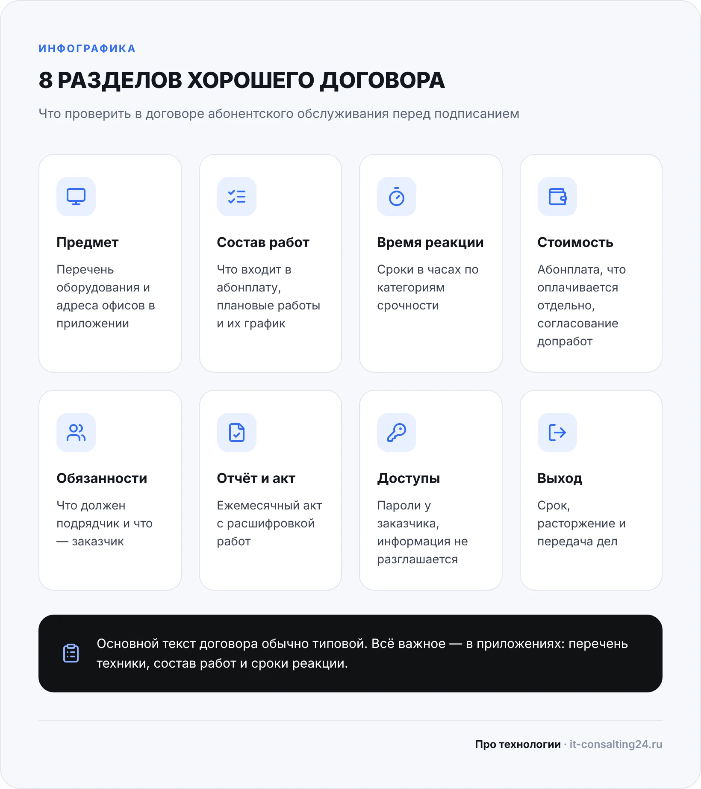
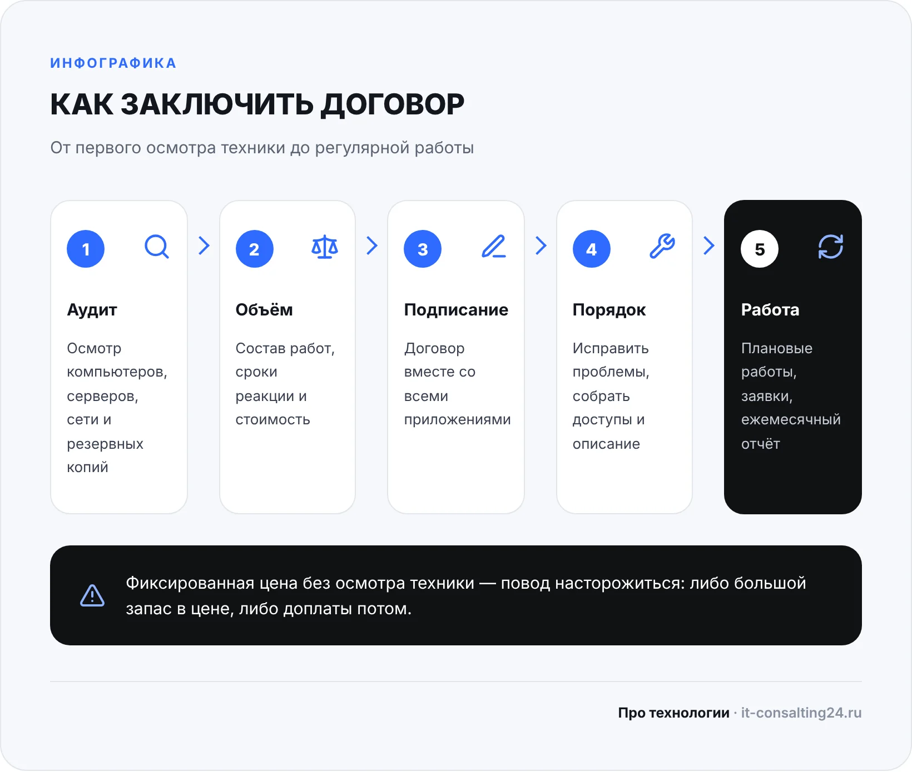

Договор абонентского обслуживания компьютеров — это документ, по которому подрядчик за фиксированную ежемесячную плату берёт на себя технику офиса: компьютеры, серверы, сеть, принтеры, резервные копии. О нём вспоминают, когда что-то сломалось и выясняется, что «это не входит в абонентку», а инженер приедет послезавтра. В этой статье разберём, из каких разделов состоит договор, какие формулировки защищают заказчика, а какие оставляют его без поддержки, и как проверить договор перед подписанием.
Это не юридическая консультация: готовый текст договора стоит показать юристу. Наша задача — объяснить, что должно быть написано по существу, чтобы обслуживание работало на практике.
Что такое абонентское обслуживание и чем оно отличается от разовых вызовов
При разовых вызовах вы платите за каждый выезд. При абонентском обслуживании — за то, что подрядчик постоянно отвечает за вашу инфраструктуру: принимает заявки, проводит плановые работы, следит за серверами и копиями.
В Гражданском кодексе для этого есть отдельная конструкция — договор с исполнением по требованию, или абонентский договор (ст. 429.4 ГК РФ). Ключевая её особенность: абонент вносит платежи независимо от того, затребовал ли он исполнение, если иное не предусмотрено законом или договором. Проще говоря, месяц без заявок всё равно оплачивается — вы платите за готовность подрядчика помочь, а не за количество починенных компьютеров. Это нормально, но об этом важно знать заранее и понимать, что именно входит в абонентскую плату.
Иногда обслуживание оформляют как обычный договор оказания услуг с ежемесячной платой. Для заказчика важнее не название, а содержание: перечень работ, сроки реакции, приёмка и условия выхода.
Кому подходит абонентский договор
Абонентское обслуживание выгодно, когда ИТ-задачи регулярны, а штатный сисадмин не окупается:
- в компании от нескольких до нескольких десятков рабочих мест, свой сервер или база 1С;
- разовые вызовы стали случаться каждую неделю, и счета за них трудно планировать;
- штатный айтишник уволился, и никто толком не знает, где пароли и как настроена сеть;
- нужны регулярные работы, о которых забывают: обновления, проверка копий, контроль дисков.
Если у вас два компьютера и проблемы раз в полгода, проще вызывать специалиста по необходимости. Подробнее о разовых работах — на странице обслуживания и ремонта компьютеров.
Из каких разделов состоит договор абонентского обслуживания компьютеров
Структура у большинства договоров похожа. Ниже — обязательные разделы и на что смотреть в каждом.
Предмет договора и перечень оборудования
Предмет должен быть описан конкретно: не «обслуживание компьютерной техники», а ссылка на приложение с перечнем оборудования — рабочие места, серверы, сетевое оборудование, принтеры и МФУ, видеонаблюдение, если оно тоже в зоне ответственности. Когда техники становится больше, перечень обновляют допсоглашением.
Состав работ
Второе ключевое приложение — список работ, которые входят в абонентскую плату. Отдельно перечислите плановые работы и их периодичность: что подрядчик делает каждую неделю, каждый месяц, раз в квартал.
Время реакции и режим работы
Это раздел, который часто называют SLA (соглашение об уровне сервиса). В нём фиксируют, как и в какие часы принимаются заявки и за какое время подрядчик реагирует. Хорошая практика — разделить заявки по срочности: «встал офис», «не работает у одного сотрудника», «плановая задача», и для каждой задать свой срок.
Стоимость и дополнительные работы
В договоре указывают ежемесячную плату, срок оплаты и то, что в неё не входит. Обычно отдельно оплачиваются запчасти и новая техника, лицензии на программы, крупные проекты (переезд офиса, новый сервер, прокладка сети), работы вне рабочих часов. Важно, чтобы дополнительные работы выполнялись только после согласования с вами — с указанием цены или ставки заранее.
Права и обязанности сторон
Обязанности заказчика стоит прочитать внимательно: обеспечить доступ к технике, назначить ответственного, не допускать посторонних мастеров. Если они описаны слишком широко, любую задержку легко объяснить тем, что заказчик «не обеспечил условия».
Отчётность и приёмка
Ежемесячно стороны подписывают акт. Полезно, чтобы к нему прилагался краткий отчёт: заявки, плановые работы, замеченные риски. Так видно, за что вы платите.
Доступы и конфиденциальность
Подрядчик получает доступ к серверам, почте и базам 1С. Информация должна быть конфиденциальной, а пароли — принадлежать заказчику. Подробнее — в разделе ниже.
Ответственность, срок действия и расторжение
Здесь фиксируют, что бывает за нарушение сроков, как предъявляются претензии, на какой срок заключён договор, продлевается ли он автоматически и за сколько дней нужно предупредить о расторжении.

Что входит в абонентскую плату, а что оплачивается отдельно
Большинство конфликтов начинается с фразы «это не входит в договор». Разделите работы на три группы прямо в приложении:
- Входит в абонентскую плату. Помощь сотрудникам, неисправности программ и настроек, обслуживание серверов и сети, обновления, резервное копирование, мониторинг, подключение новых сотрудников, консультации.
- Оплачивается отдельно по согласованию. Запчасти, новая техника, лицензии, ремонт оборудования в сервисном центре, проекты вроде переезда или внедрения новой системы.
- Не выполняется. Например, личные телефоны и домашние компьютеры сотрудников — скажите им об этом сразу.
Если подрядчик ограничивает число выездов или часов в месяц, в договоре должно быть написано, сколько стоит работа сверх лимита.
Время реакции: какие цифры записать в договор
Формулировка «в разумный срок» или «по мере возможности» ничего не гарантирует. Нужны конкретные цифры, и лучше трёх видов:
- время реакции — когда подрядчик подтвердил заявку и связался с вами;
- время начала работ — когда специалист подключился удалённо или приехал;
- срок решения или обходного решения — когда офис снова может работать, даже если полный ремонт займёт больше времени (например, сотруднику дали другой компьютер, пока его ноутбук в ремонте).
Уточните, в какие часы считаются сроки и что будет с заявкой, отправленной в пятницу вечером. Если важны выходные (магазин, склад), пропишите их отдельно.
Для ориентира: у нас выезд по Оренбургу в большинстве случаев в день обращения, срочные задачи — в течение 2–3 часов, а многие проблемы решаются удалённо быстрее. Время реакции мы фиксируем в договоре вместе со стоимостью.
Доступы, пароли и резервные копии
Частая история при смене подрядчика — пароли от сервера, роутера и почты знает только он. Договор абонентского обслуживания компьютеров должен это исключать:
- все учётные записи администратора, пароли и ключи принадлежат заказчику;
- подрядчик ведёт актуальный список доступов и описание инфраструктуры и передаёт его заказчику по запросу и при расторжении;
- у заказчика есть собственная учётная запись администратора, которую подрядчик не может отключить;
- какие данные копируются, как часто, где хранятся копии и как часто подрядчик проверяет восстановление.
Копия, из которой никто не пробовал восстановиться, может подвести в нужный момент. Подробно о защите данных мы писали в статье о защите от шифровальщиков.
Расторжение и передача дел
Условия выхода обсуждают на старте, пока отношения хорошие. Проверьте:
- за сколько дней нужно предупредить о расторжении и можно ли выйти из договора без объяснения причин;
- есть ли штрафы или минимальный срок договора;
- как рассчитывается плата за неполный месяц;
- что подрядчик передаёт при выходе: пароли, описание сети и серверов, схему резервного копирования, список лицензий — и в какой срок.
Порядок отказа от абонентского договора закон описывает не вполне однозначно, поэтому пропишите его в самом договоре и согласуйте с юристом.
Спорные ситуации и как закрыть их в договоре
Ниже — типичные ситуации, которые возникают на практике, и пункт договора, который их предотвращает.
| Ситуация | Почему так вышло | Что прописать |
|---|---|---|
| «Это не входит в абонентку» | Состав работ описан общими словами | Приложение со списком работ: входит, оплачивается отдельно, не выполняется |
| Инженер приехал только через два дня | Нет сроков реакции или они «в разумный срок» | Сроки реакции и начала работ по категориям срочности и часы, в которые они считаются |
| Пришёл неожиданный счёт за дополнительные работы | Не описан порядок согласования допработ | Допработы только после письменного согласования с ценой или почасовой ставкой |
| Новые компьютеры обслуживать отказываются или выставляют доплату | Перечень оборудования не обновлялся | Порядок изменения перечня и пересчёта цены через допсоглашение |
| После расторжения нет паролей от сервера и роутера | Доступы хранились только у подрядчика | Доступы принадлежат заказчику, передаются при расторжении в фиксированный срок |
| Резервная копия не восстановилась | Копирование не проверялось | Что копируется, как часто и периодичность тестового восстановления с отметкой в отчёте |
| Непонятно, за что платим каждый месяц | Акт без расшифровки работ | Ежемесячный отчёт: заявки, плановые работы, замеченные риски |
Как заключить договор: порядок действий
Хороший договор складывается из знания вашей инфраструктуры. Обычно процесс такой:
- Аудит. Подрядчик смотрит компьютеры, серверы, сеть и резервные копии, составляет перечень оборудования и список проблем. У нас такой аудит бесплатный и занимает 1 день.
- Согласование объёма. По итогам аудита определяют, что входит в обслуживание, какие сроки реакции нужны и сколько это стоит.
- Подписание договора с приложениями. Перечень оборудования, состав работ, сроки реакции, список контактов для заявок.
- Наведение порядка. В первые недели подрядчик исправляет найденные проблемы, собирает доступы и описывает, как всё устроено.
- Регулярная работа и отчёты. Плановые работы, заявки, ежемесячный акт и отчёт.

Если подрядчик называет фиксированную цену, не посмотрев на технику, это повод насторожиться: либо в цене большой запас, либо потом появятся доплаты.
Чек-лист перед подписанием договора абонентского обслуживания
Пройдитесь по списку с договором в руках. Если на какой-то пункт ответ «нет» или «непонятно», задайте вопрос подрядчику до подписания.
- Есть приложение с перечнем оборудования и адресами офисов.
- Есть приложение со списком работ, которые входят в абонентскую плату.
- Понятно, что оплачивается отдельно и как согласуются дополнительные работы.
- Сроки реакции указаны в часах, а не «в разумный срок», и понятно, в какие часы они считаются.
- Указано, как подавать заявки и кто с вашей стороны может их подавать.
- Описаны плановые работы и их периодичность.
- Резервное копирование и проверка восстановления описаны отдельным пунктом.
- Пароли и доступы принадлежат вам и передаются при расторжении.
- Прописана конфиденциальность информации.
- Ежемесячный акт сопровождается отчётом о работах.
- Понятны срок договора, автопродление и порядок расторжения.
- Договор посмотрел юрист.
Типичные ошибки при заключении договора
- Выбор только по цене. Самая низкая абонентская плата часто означает короткий список работ и долгие сроки реакции.
- Договор без приложений. Основной текст договора обычно типовой, а всё важное — в приложениях. Без них спорить о составе работ бесполезно.
- Сотрудники не знают условий. Не понимая, куда подавать заявки, они звонят «знакомому мастеру» или чинят сами.
- Договор не пересматривают. Компания выросла, а перечень оборудования прежний. Раз в год приложения стоит сверить с реальностью.
Если вы хотите передать ИТ на аутсорсинг целиком, посмотрите, как устроено абонентское обслуживание у нас: что входит, как проходит аудит и из чего складывается стоимость.
Частые вопросы
Нужно ли платить по абонентскому договору, если заявок в месяце не было?
Как правило, да. По абонентскому договору (ст. 429.4 ГК РФ) платежи вносятся независимо от того, было ли затребовано исполнение, если договор не предусматривает иное. К тому же подрядчик в такие месяцы обычно выполняет плановые работы и мониторинг — их стоит видеть в ежемесячном отчёте.
Сколько стоит абонентское обслуживание компьютеров?
Зависит от количества рабочих мест, серверов и задач, поэтому цену называют после осмотра инфраструктуры. У нас ИТ-аутсорсинг стоит от 15 000 ₽ в месяц, точная сумма фиксируется в договоре после бесплатного аудита.
Можно ли взять типовой договор из интернета?
Как основу — можно, но главная ценность договора в приложениях: перечне вашего оборудования, составе работ и сроках реакции. Их всё равно придётся составлять под вашу компанию. Готовый текст лучше показать юристу.
Что делать, если подрядчик не выполняет условия договора?
Фиксируйте заявки и сроки письменно — через почту или систему заявок, а не только по телефону. Это основа для претензии. Если нарушения повторяются, используйте порядок расторжения, прописанный в договоре, и заранее запросите передачу доступов и документации.
Входит ли ремонт принтеров в абонентское обслуживание?
Настройка и подключение принтеров и МФУ обычно входят, а запчасти, картриджи и ремонт в сервисном центре чаще оплачиваются отдельно. Это стоит прямо указать в приложении. Подробнее — на странице обслуживания принтеров и МФУ.